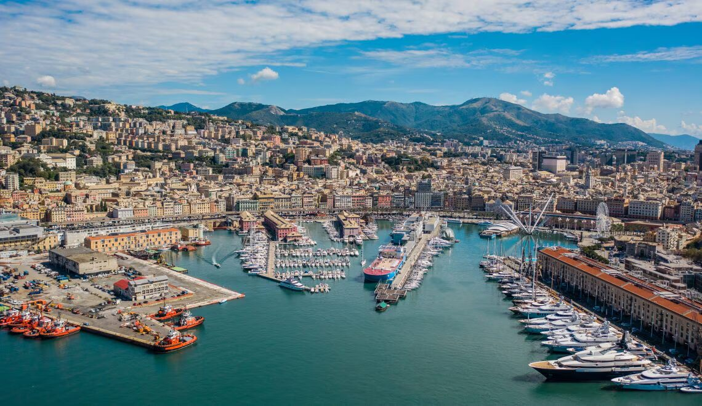
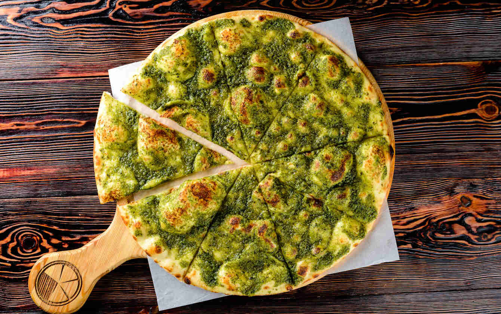
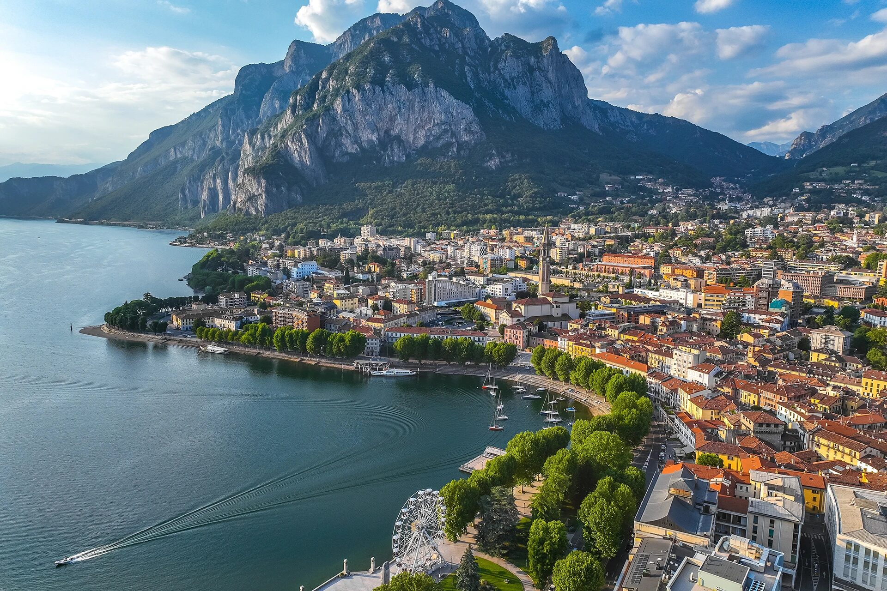
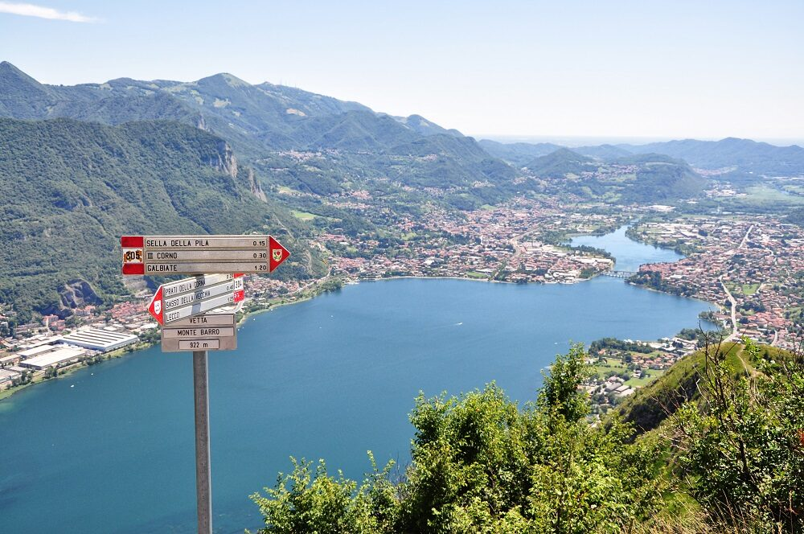
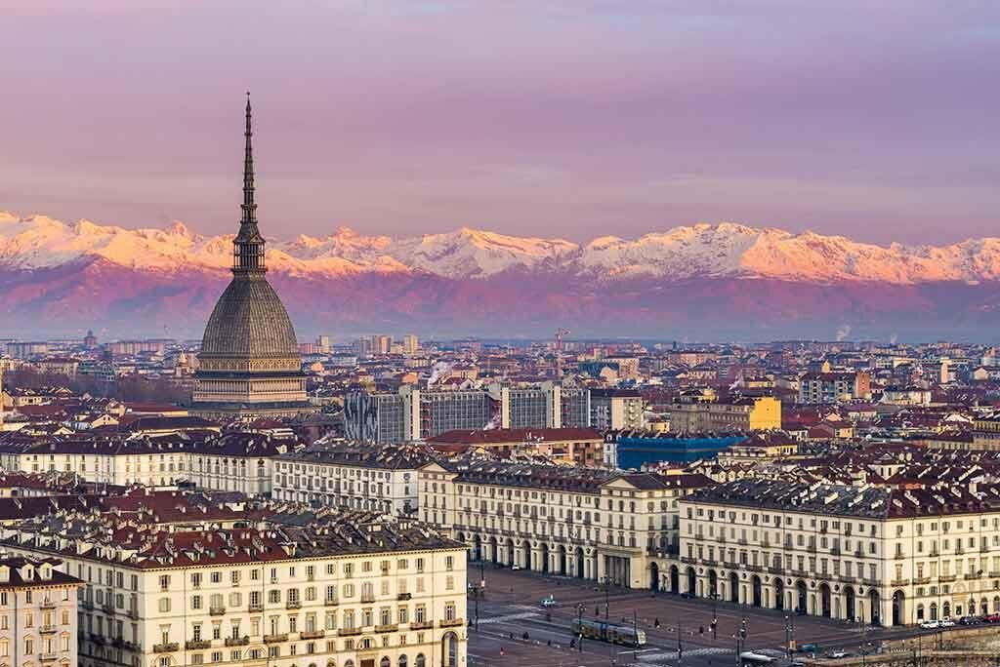
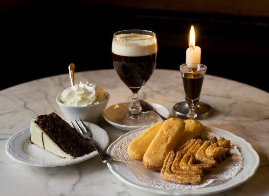

Day Trips from Milan
Genoa: Port Charm & Pesto Paradise


Dive into the vibrant atmosphere of Genoa (Genova), Italy's largest seaport, located along the Ligurian coast. Lose yourself in the maze-like medieval alleyways ('caruggi') of its historic centre, a UNESCO World Heritage site. Feel the sunny seaside vibe, admire the palm trees, and don't miss the chance to taste authentic Genovese pesto and focaccia – they were born here!
Key highlights include the massive Aquarium of Genoa, one of Europe's best, offering a fascinating look beneath the waves. For breathtaking panoramic views over the colourful rooftops and bustling harbour, take the enchanting Art Nouveau lift up to the Spianata Castelletto viewpoint. If time allows, the charming fishing village of Boccadasse is just a short bus ride away.
Getting There
- From: Milano Centrale station primarily.
- Time: Approx. 1.5 - 2 hours (faster trains available).
- Cost: Starting around €10-€15 for regional trains (often cheaper booked in advance), significantly more for high-speed options.
Lecco: Lakeside Serenity & Mountain Vistas


Escape the city buzz for the tranquil beauty of Lecco, a charming town nestled on the southeastern shore of Lake Como, surrounded by dramatic mountains. Less crowded than some other lake destinations, Lecco offers authentic Italian lakeside life just a short journey from Milan. Enjoy a cappuccino at a café along the river Adda, soaking in the stunning mountain views.
For hiking enthusiasts, the area around Monte Barro provides excellent trails. We recommend Trail 304 for those seeking a rewarding challenge. Its steeper sections lead to truly breathtaking panoramic views of the lake and surrounding peaks. Even without a strenuous hike, the serene atmosphere and gorgeous scenery make Lecco well worth the visit.
Getting There
- From: Milano Centrale or Milano Porta Garibaldi stations.
- Time: Approx. 40 - 60 minutes.
- Cost: Around €5 - €6 each way.
Turin: Royal Elegance & Chocolate Dreams


Discover Turin (Torino), the elegant first capital of Italy, known for its grand piazzas, baroque architecture, and a distinctly refined, almost French-inspired atmosphere thanks to the legacy of the Savoy royal family. Stroll under the miles of arcaded walkways, perfect for window shopping or escaping the weather.
Don't miss the iconic Mole Antonelliana, housing the National Museum of Cinema, or the regal Piazza San Carlo and Piazza Castello. Turin is also a haven for food lovers, especially chocolate enthusiasts. Indulge in a unique local specialty, the Bicerin – a delicious layered drink of espresso, hot chocolate, and cream, often enjoyed in historic cafes. It's a city rich in history, culture, and culinary delights.
Getting There
- From: Milano Centrale or Milano Porta Garibaldi stations.
- Time: Approx. 1 hour (High-speed) or 2 hours (Regional).
- Cost: Starting around €13 for regional trains, significantly more (€30+) for high-speed options.
Explore Further
These are just a few suggestions for fantastic day trips from Milan, each offering a unique experience. The Lombardy region and its neighbours are filled with beautiful towns, stunning lakes, and historic sites easily reachable by train.
For more ideas and official tourism information, you can visit the official Lombardy Tourism website: